Other Aleens
Ratts Tyerell has not been the only member of the Aleena race (or Aleen race, both seem to be correct) so far in the Prequel Trilogy. Here are other examples of Aleens.
Episode I: The Phantom Menace
Tour guide
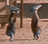 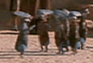
A group of Aleens tour Mos Espa as Qui-Gon and co enter for the first time. Ratts is presumed to be among them, possibly the one showing the others around.
Cockpit crew
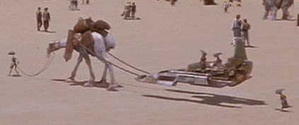
Right before the scene in the Podracer Hanger, an Eopie is seen pulling Mars Guo's cockpit. Two Aleens sit on the cockpit while another chases after them. Why are they on Mars Guo's cockpit though? Perhaps they were just hitching a ride.
Ratts Tyerell's family
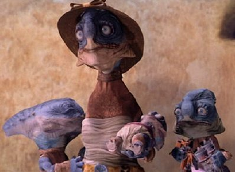
In the Episode I deleted scenes, Ratts Tyerell's wife and 3 of his children (one of which was born just prior to the Boonta) attend the race to watch Ratts. One of Ratts' children holds toys of Ratts Tyerell and Sebulba's podracers.
Pit Crew
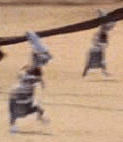
Just before the race starts, Ratts Tyerell's pit crew can be seen scrambling away from the starting grid.
Spectators
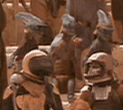
Up in the arena crowd, 3 Aleens watch the race. They can be seen as Sebulba finishes the first lap. They appear to be particularly large Aleens.
Crying Family
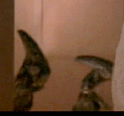
Grieving fans of Tyerell pass by a doorway as Qui-Gon discusses his bet with Watto. They may be Ratts' family, but that is not known for sure.
Aleena Senators
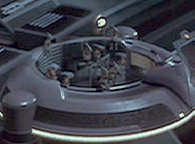
The counsel of Aleen is composed of about 9 Aleenas.
Episode II: Attack of the Clones
Bogg Tyrell
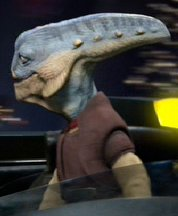
Bogg Tyrell is a female Aleena seen on Coruscant. She is first seen in an air taxi with her date, Seboca the Dug. Obi-Wan flies by them while he holds on to the assassin droid. She is seen again in Dex's Diner, walking in behind Obi-Wan and then walking out with a drink.
Baby
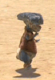
When Anakin and Padme arrive on Tatooine, a baby Aleen runs by and chases away some Nunas.
Other
Tsui Choi
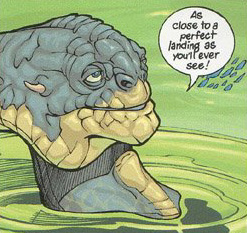
The comic Jedi Council: Acts of War includes a Aleena Jedi Master named Tsui Choi. Tsui is a pilot and has a padawan Anx named Theen Fida.
Deland Tyerell
After Ratts Tyerell's death, his son Deland became a podracer. 6 years after the Boonta, Deland entered an illegal podrace on planet Euceron. (Jedi Quest #3- The Dangerous Games). He hoped to free his sister Djulla from Sebulba with a bet. He broke his arm prior to the race while trying to keep Sebulba from hurting Deland. Unable to race, Anakin Skywalker took over for him. During his time as a racer he sometimes used the name Pabs Tyerell. He later became the head of the Ratts Tyerell Foundation, bent on having podracing banned. His efforts caused course modifications on 12 worlds and a complete ban on podracing on Caprioril. Mentions of Deland on Holonet News can be found here, here, and here.
Doby Tyerell
Doby is one of Ratts Tyerell's sons. He is 14 months younger than his brother Deland. He worked as Deland's mechanic during Deland's podracing career.
Djulla Tyerell
Djulla is Ratts Tyerell's sister. After Ratts' death, his family lost their money and Ratts' brother was forced to sell Djulla into slavery. Sebulba became her master. It wasn't until the Galactic Games that Djulla was freed. Anakin Skywalker raced on behalf of Deland Tyerell and was able to beat Hekula the Dug, despite racing with a sabotaged podracer. Deland, Doby, and Djulla fled Euceron immediately after the race.
{kind=link}
{kind=link}
{kind=link}